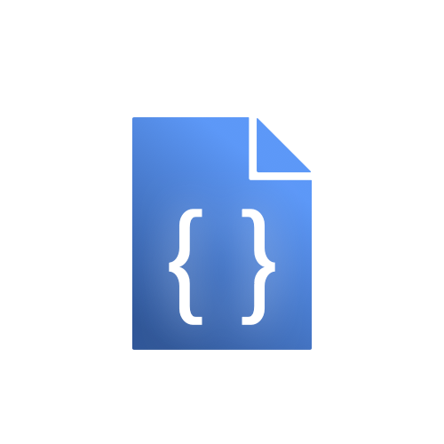

Cheatsheets
This is a collection of my cheatsheets. Feel free to use them. If you want to edit them, to your own needs: Pleae visit my Github-Repo, give it a star and clone it.
| Title | Description | |
|---|---|---|
|  | Azure ML | Azure ML is the machine learning service of the Azure Cloud Platform. |
| Bash | Bash is a command line tool and language. | |
| Conda | Conda is a package and virtual environment manager. | |
| GCP: gcloud CLI | Gcloud CLI is the command line interface of the Google Cloud Platform. | |
| Git | Git is a version control system mostly used for code. | |
| Pip | Pip is the official python package manager | |
| Python | Python is one of the most popular programming languages. | |
| Quarto | Quarto is a publishing tool that allows you to render markdown documents into websites, documents and presentations. | |
| R basics | R is a programming language that is specialized in statistical analysis. | |
| R plotting | R has powerful builtin plotting capabilities | |
| R statistics | The standard statistics components of R | |
| VS Code | Visual studio code is one of the most popular code editors. | |
| ruff | A fast Python linter, that contains tons of rules from flake8, pycodestyle, pep and black |
No matching items